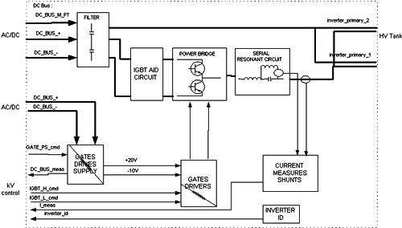
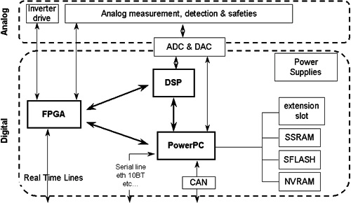
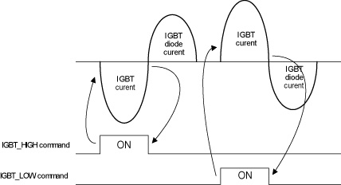
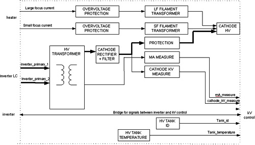
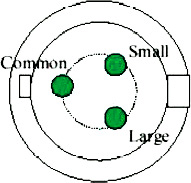
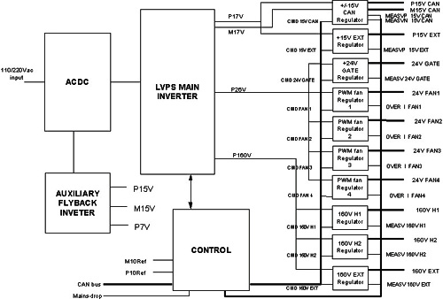
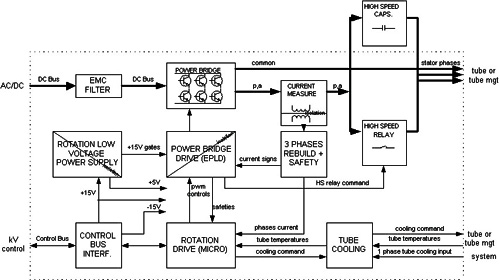
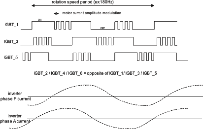

Operating Documentation
Direction 5193855-800, Rev# 4
LS 5.X RT Ltd. Access Service Information Adv
Operating Documentation |
This module presents the theory of the following X-Ray Generation sub-system components:
HV Power Inverter (Section 2), including Gate Command (Section 2.3).
Power PC (PPC) kV Control Board (Section 3), including:
CPU Core (Section 3.2)
JEDI Internal Control Bus (Section 3.3)
Exposure Control (Section 3.4)
HV Power Inverter Control (Section 3.5)
HV Chain Measures and Safeties (Section 3.6)
External Interfaces (Section 3.7)
HV Tank (Section 4), including:
EMI Protection (Section 4.1)
HV Cable (Section 4.2)
Auxiliary Box (Section 5), including:
Low Voltage Power Supply 400 (LVPS400) (Section 5.1)
Rotation Board (Section 5.2)
Heater Board (Section 5.3)
Illustration 1: HV Power Inverter

| NOTE: | For a larger version of this illustration, click on the pdf icon below: |
Media File 1: HV Power Inverter

The HV power Inverter is a hypo-resonant inverter. LightSpeed 5.x systems use a full bridge type of inverter with 4 IGBTs for switching.
The resonant circuit presents two resonant frequencies:
A serial resonance frequency made by the resonant capacitor and the sum of all the circuit serial inductors (including the HV transformer leakage inductance). Its frequency is fixed at 50KHz to 70KHz depending on the inverter tiering (63kHz for LightSpeed 5.x).
A parallel resonance frequency made by the resonant capacitor and the parallel inductance. Its frequency is fixed at 20KHz for all tierings.
The inverter drive frequency ranges between the parallel frequency and the serial frequency. This is driven by kV control to deliver the proper high voltage to the X-Ray tube.
The inverter produces maximum current when it is commanded near (under) the serial frequency and produces the minimum current when it is commanded near (above) the parallel frequency (ex: 0mA at >=20KHz).
Serial and parallel currents are measured by current transformers and used by the kV control board for HV power inverter command (see kV control and kV function).
The HV power inverter is composed of two FRUs:
Inverter
Heat sink
IGBTs and aid circuit
Gate command board
Parallel inductor
Inverter LC. It is composed of:
Aid and serial inductor
Filtering capacitors
Resonant capacitor
Serial and parallel current measure transformers
PPC kV control board
The gate command board in LightSpeed 5.x is supplied with 24Vdc for full bridge topology. As a result of being connected to the DC Bus, IGBTs have both their gate drivers and the gate drivers supply isolated from ground.
The kV control board controls the IGBTs. Small pulse transformers isolate the command. They command a semi-power stage which drive the IGBTs gates. The gate command board has the capability to drive up to two 400A IGBTs in parallel which is the case for vascular power.
The IGBT gate drivers supply is made by a small fly-back power supply fed by the DC Bus or 24Vdc and regulated by the kV control board (see kV control sections). The fly-back IGBT command is made through a pulse transformer. This supply produces +20V and -10V for IGBTs gates drives.
The PPC kV control board is the primary generator controller.
Its main features are:
CPU, which runs the generator software:
Communication with On-board Rotating Processor (ORP)
Exposure sequencing (rotation, heater, exposure control)
mA regulation
Generator thermal protection
Generator configuration management
Tube calibrations
Generator diagnostics
Control bus interface
Exposure control
HV power inverter control
IGBT gate drive supply control
HV chain measurements and safeties (kV, mA, mAs, inverter currents, inverter gate supply, DC bus)
Illustration 2: kV Board

The CPU is a Power PC micro-controller based CPU running at 50MHz. Program memory is a 2MB flash memory which allows the firmware to be downloaded through the console.
Data memory contains a 256KB RAM and a 32KB battery backed-up RAM used to store the configuration/calibration data.
The generator firmware is based on VxWorks operating system and divided into several tasks and layers:
Communication tasks control the various communication paths provided by the CPU
Application task handles the exposure state machine
Device controller tasks which identify and then drive the kV control, mA control, heater and rotation functions
Calibration and diagnostic functions are also part of the generator firmware.
The kV control board is connected to the internal generator communication bus of which it is the master controller. This bus is used for the board to communicate with the LVPS, Heater, and Rotation boards. The CAN bus consists of:
CAN communication line used to drive heater and rotation functions
Reset line (from kV control to other functions)
mains_drop (from lvps board to signal without delay a drop on the main supply)
ctrl_to_grid (from kV control to grid for pulsed modes in vascular)
speed_cons_to_rotor (spare)
+15V (used to create locally 5V supply)
-15V
The exposure control master is the Power PC chip. Once the generator recognizes the system connected to the generator, the CPU downloads the exposure control configuration stored in an FPGA and a DSP. Then, the CPU manages the slow functions while the FPGA manages the hard real-time functions:
FPGA:
Handles the system/generator IO lines (including exposure command lines and brightness)
Triggers/cuts the exposure
Handles X-ray On signal
Generates the 1KHz microprocessor main interrupt
CPU:
Updates the exposure state machine based on the signals sent by the FPGA
Passes the exposure enable to the FPGA once everything is ready for the exposure
Calculates and applies kV, mA, exposure time, mAs
Counts the exposure time
Regulates mA every 1ms
Handles heater and rotation errors
DSP:
Handles the HV power inverter safeties.
This function is controlled by the DSP and FPGA. They handle the HV power inverter state machine. This state machine goes into its active states when the exposure control function triggers an exposure. Then the state machine successively drives each IGBT gate.
The delay applied between two consecutive IGBT “on” commands is calculated inside the DSP. This delay time is the minimum time of either:
the parallel resonance time which represents the max delay not to go over (the inverter must not be driven below the parallel resonance frequency)
the time calculated by the kV regulation loop
This second time is the result of the kV regulation loop whose role is to keep the measured kV equal to the kV demand:
kV measure is subtracted from kV demand to create error_kV
error_kV is divided in two parallel chains made of a kV error peak detection
the error then feeds a PI (Proportional Integral) regulator which calculates the delay to apply before triggering the next IGBT (computed by DSP)
Each IGBT “off” command is triggered by the 0 Amp crossing of the serial resonant current.
Illustration 3: HV Power Inverter Serial Resonant Current

In the case of a tube spit, the state machine goes to the “off” state for 100us and automatically restarts if the maximum number of tube spits is not reached.
At the same time, the main software counts the number of spits and informs the system.
IGBT commands from the FPGA then go through drivers to the inverter. The drivers can be disabled by a mains drop or an incorrect gate supply.
The IGBTs gate drive supply is controlled synchronously with the inverter state machine:
Gate supply voltage is read and compared to a reference
Each two IGBT commands and the gate supply IGBT is commanded with a duration proportional to the gate voltage error
Between exposures, with the inverter not running, the gate supply is regulated by at a fixed (8KHz) frequency. Constant gate supply voltage is ensured by regulating the gate supply command pulse width.
The High Voltage chain is protected by fast and slow safeties. Fast safeties are implemented in analog form and will cut the HV power inverter state machine in case of errors, such as:
Over kV
No kV
kV regulation error (at the 7th error in the exposure)
Cathode spit (after the max number of tube spits allowed for the application/tube)
Max resonant current
Gate supply ok
Slow safeties are based on measures made by the micro-controller.
The following signals are measured every 1ms:
kV measure
kV unbalance
kV demand
mA measure
HV tank temperature
Gate supply voltage
DC Bus voltage
These measurements provide a second way to detect a fault condition in the HV chain and put the generator in a safe state.
The interface between the generator and the ORP consists of:
An isolated CAN communication line to the OGP (RCIB1)
Three isolated Real-Time lines (RS485):
Exposure command
X-ray-on
Reset
There are also interfaces with the DAS and the Heat Exchanger's Power IF board.
The interface with the DAS provides real-time analog kV and mA signals to the DAS for inclusion in the image data stream. These are negative polarity differential pair signals with 1k ohm source impedance. Scaling for the kV signal is 0 to -10Vdc for 0 to 200kV and 0 to -10Vdc for 0 to 1000mA.
The interface with the Power I/F board consists of an isolated CAN communication line and command lines to read the tube pressure and temperature switches.
Illustration 4: HV Tank

| NOTE: | For a larger version of this illustration, click the pdf icon below: |
Media File 2: HV Tank

The mono-polar High Voltage Tank has the anode grounded and can go up to 160kV on the cathode side.
The HV transformer presents two primary coils connected in serial and to the inverter LC. Four secondary coils are connected in serial along with their rectifier/filter stage. The transformer ratio is 417 for 1 and 3 phase input line applications (which lead to a 400VDC-800VDC DC Bus).
Total HV filtering capacitor is 0.5nF inside the mono-polar HV tank. The inverter topology along with this HV filtering capacitor produces HV ripple in the 40KHz-140KHz range. This ripple is not measurable at low mA and up to a few percent at max mA.
The cathode kV is measured and reported to the kV control board for kV regulation, kV safeties and tube spits detection. mA measurement is made in the anode side of the transformer and transmitted to the kV control board for mA regulation and safety.
The HV tank is sealed by the kV measure board placed on top of it. This board must not be removed. The HV Tank can be used in any position. A temperature measure is placed in the oil under the cover and is used to track HV Tank temperature and prevent overheating (max temperature allowed is 67 degrees C).
The HV Tank input cables are tucked inside an EMI shielding box. This box, along with proper cable routing ensures that the system does not develop IQ artifacts caused by the generator.
The cathode HV connection between the HV Transformer and the X-ray tube is made with 3-conductor shielded, 160kV HV cable (delivered with the tube). The HV Tank side termination is a PMI type H454P3-160 which is oil-filled and sealed. The resistance across the filaments and transformer windings is approximately 0.2 ohms, or close to a short circuit when measured.
The HV cable has delivers the negative High Voltage (-150kV <= Demand KV <=0kV) and the filament current for the large and small focal spots directly from the HV tank to the X-ray tube.
Illustration 5: HV Cable Connections

The Auxiliary Box is simply a package containing three circuit boards:
Low Voltage Power Supply 400 (LVPS400 or LVPS)
Rotation Board
Heater Board
The LVPS400 board is designed to supply low voltage power the various circuits of the JEDI generator. The board communicates with kV Control Board by the means of a CAN bus and one real time line (MAINS_DROP). LightSpeed 5.x systems power the LVPS with 120VAC, single phase.
The LVPS400 has 11 specific outputs:
P15VCAN and M15VCAN to supply the PPC board and the low voltage parts of Heater and Rotation boards.
P15V EXT intended to supply mainly the low voltage circuits of the grid control tank - InGrid tank- (Not used on LightSpeed 5.x)
24V GATE to supply the Gate control board of JEDI main inverter
Four specific outputs (24V FAN) intended to connect fans. Each output can drive two fans connected in parallel, so depending on the considered system, up to eight fans can be used. Each output voltage is programmable by firmware
Two outputs 160 H1 and 160V H2 designed to supply two different Heater boards. LightSpeed 5.x uses only one.
160V EXT to supply the INGRID tank power circuits (not used on LightSpeed 5.x).
The board monitors the output voltage and current. Depending on the values, it may generate warnings, which are sent to the kV control board, but the exposure is not interrupted.
Illustration 6: LVPS400

| NOTE: | For a larger version of this illustration, click the pdf icon below: |
Media File 3: LVPS400

The main features of the High Speed Rotation Board are:
Max speed=180Hz=10800rpm rotation board (with the capacity to drive the rotor in Low Speed)
Supports multiple X-Ray tube types
Manages tube thermal safeties
Manages tube cooling commands (this is not used by LightSpeed, as the host manages the tube cooling algorithm)
Illustration 7: Rotation Board

| NOTE: | For a larger version of this illustration, click the pdf icon below: |
Media File 4: Rotation Board

Since the rotation board utilizes a three-leg inverter with six IGBTs, the inverter is fed by the DC bus and is fused inside the JEDI Inverter assembly. The inverter drive uses a PWM (Pulse Width Modulation) of the IGBTs commands. This principle applies periodic commands on the IGBTs equal to the speed selected to generate a sine wave current in each phase at the anode speed frequency with the optimum angle between the phases. Inside this “fundamental” command frequency, the IGBTs command duration is modulated in order to get the right level of current in the phases.
Illustration 8: IGBTs

Illustration 9: Example of Bi-Phased SLEM Motors High Speed Drive Timing

Depending on the stator windings number (2 or 3), their impedance, and the speed selected, the main and auxiliary phases are either connected directly to the phases (example: in high speed mode on a tri-phased low impedance stator, in low speed mode for a bi-phased stator, in high speed brake) or through a module of shift capacitors whose role is to put the right angle between the phases to ensure maximum efficiency in acceleration and run. This capacitor module is defined for each stator and is different from one tube stator to another.
The Rotation board is includes a relay which puts the capacitors in the circuit or out of circuit (via short-circuit) depending of the state of the rotation drive.
IGBTs gate drives require isolation because the IGBTs are connected to DC voltage. This is accomplished through optocouplers. Gate drives power supplies are generated by a small fly-back power supply which uses the +15V of the JEDI Internal Control Bus to generate 4 isolated +15V to power each IGBT gate. This power supply also powers the 5V for all logic functions.
CPU
The rotation drive mainly relies on a 16 bits, 20MHz, 32Kbyte memory micro-controller.
It is responsible for:
Retrieving, at power-up, the rotation database containing all the data required to drive the stator:
current references for each state
acceleration and brake durations
rotation inverter current safety levels
Receive commands from kV control board and update the rotation state accordingly
Measure the rotation inverter currents and regulate the rotation inverter
Give feedback (rotation speed, errors) to the main software, and put anode rotation in a safe state in case of error
Read the tube safety switches
The micro-controller commands the power bridge drive through an EPLD in charge of:
Mixing fundamental and modulation commands
Demultiplexing the PWM command to command the 6 IGBTs
Stopping the inverter in case a safeties error requiring a fast action is generated (inverter overload, mains drop, tube temperature reaches 70 degrees C)
Drive the high speed relay
Fundamental frequency is applied so that the sine wave in the phases is at the frequency corresponding to the desired anode speed. It is calculated by the micro-controller.
The modulation of the IGBT commands is the result of a regulation loop which ensures the right current level is reached for the tube and the rotation state. This loop ensures optimum acceleration performances in all conditions of DC bus and of stator temperature.
The current is measured inside 2 phases and reconstructed for the third phase. Then the measure is compared to the reference value and the error leads to an adjustment of the modulation rate.
All rotation states are regulated except the brake. The brake includes a state where a DC current is generated in open loop mode, the command frequency depending only of the tube and the line voltage.
The main features of the Heater Board are:
Filament Switching
Ability to drive filaments up to either 5.5A or 6.5A depending of the filament type, and 10A in boost mode
Filament protection against overheating and filament open detection
Illustration 10: Heater Board
| NOTE: | For a larger version of this illustration, click on the pdf icon below: |
Media File 5: Heater Board

The heater inverter is an hyper-resonant half bridge inverter fed by a 160VDC voltage provided by the Low voltage power supply. The resonant frequency is fixed at 20KHz, and the working frequency range is between 20KHz (maximum power) and 60KHz (minimum power around 1.5A in the filament). Current waveform in the inverter is approximately a sine wave. The inverter working frequency range makes it completely inaudible.
The filaments being at the cathode voltage, an isolation transformer for each filament is located in the HV Tank. These transformers present a 1:1.25 ratio leading to a RMS current in the heater inverter 1.25 times the filament current. The inverter is switched to one of the two filaments by the focus selection relay or solid-state switch. No isolation is required to drive the MOS switches because the input voltage is referenced to ground.
CPU
The heater drive mainly relies on a 16 bit, 20MHz, 32Kbyte memory micro-controller.
It is responsible for:
Retrieve, at power-up, the heater database containing data required to drive the filaments:
Filament max currents
Boost duration
Heater inverter current safety levels
Receive commands from the kV control board, and update the heater state accordingly
Measure the heater inverter current and regulate the heater inverter
Simulate the filament temperature and protect it against overheating
Give feedback to the main software, and put the heater in a safe state in case of error
Read the +15V, -15V (Control bus voltages), heater supply bus and inform the main software
The micro-controller commands the power bridge drive through an EPLD in charge of:
Demultiplexing the drive frequency to command the 2 MOS
Stopping the inverter in case a safeties error requiring a fast action is generated [over-current, over-voltage (=filament open detection), inverter short circuit, mains drop, tube temperature reaches 70 degrees]
Drive the focus selection relay and read its position
The filament current accuracy and reproducibility must be excellent (less than several thousandths tolerance) to ensure acceptable scan mA accuracy and reproducibility. Since filament current cannot be measures (it is at very high voltage), the heater inverter current (and not the filament current) is regulated. The heater inverter current is measured and converted to RMS. The RMS current is measured by the micro-controller and compared to the reference. The error in the comparison leads to an adjustment of the inverter drive frequency. At the same time, the micro-controller tracks the filament temperature based on the filament current applied and prevents overheating.